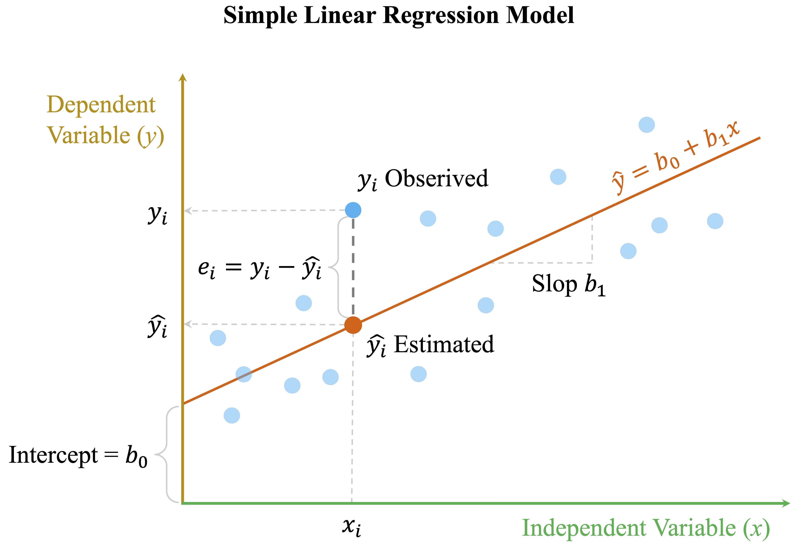
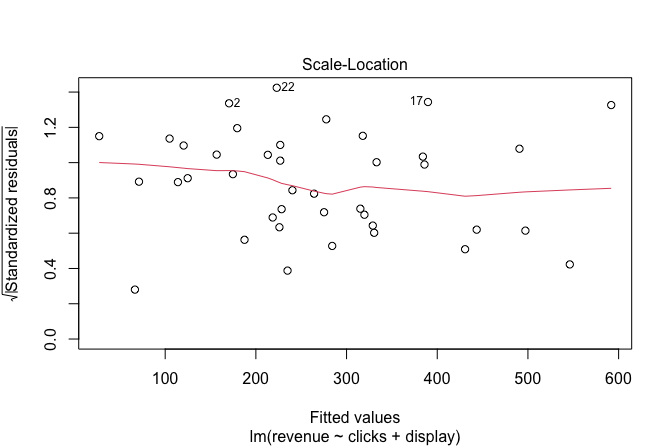

library(liver)
data(marketing, package = "liver")
str(marketing)
'data.frame': 40 obs. of 8 variables:
$ spend : num 22.6 37.3 55.6 45.4 50.2 ...
$ clicks : int 165 228 291 247 290 172 68 112 306 300 ...
$ impressions : int 8672 11875 14631 11709 14768 8698 2924 5919 14789 14818 ...
$ display : int 0 0 0 0 0 0 0 0 0 0 ...
$ transactions : int 2 2 3 2 3 2 1 1 3 3 ...
$ click_rate : num 1.9 1.92 1.99 2.11 1.96 1.98 2.33 1.89 2.07 2.02 ...
$ conversion_rate: num 1.21 0.88 1.03 0.81 1.03 1.16 1.47 0.89 0.98 1 ...
$ revenue : num 58.9 44.9 141.6 209.8 197.7 ...10 Regression Analysis: Foundations and Applications
Everything should be made as simple as possible, but not simpler.
How can a company estimate the impact of digital advertising on daily sales? How do age, income, and smoking habits relate to healthcare costs? Can housing prices be predicted from a home’s age, size, and location? Questions such as these lie at the heart of regression analysis, one of the most widely used tools in data science. Regression models allow us to quantify relationships between variables, assess their strength and direction, and generate predictions grounded in observed data.
The origins of regression analysis date back to the late nineteenth century, when Sir Francis Galton introduced the term regression to describe how offspring heights tend to move toward the population mean. Its mathematical foundations were later formalized by Legendre and Gauss through the method of least squares, establishing a systematic approach for estimating relationships from data. What began as a study of heredity has since evolved into a central framework for modeling, inference, and prediction across a wide range of scientific and applied domains. Advances in computing and tools such as R have further expanded the practical reach of regression methods, making them accessible for large-scale and complex data analysis.
Today, regression models play a critical role in fields such as economics, medicine, engineering, and business analytics. They are used to estimate causal effects, predict future outcomes, and identify risk factors that inform decision-making. As Charles Wheelan notes in Naked Statistics (Wheelan 2013), “Regression modeling is the hydrogen bomb of the statistics arsenal.” Used carefully, regression can provide powerful insights; used uncritically, it can lead to misleading conclusions. Sound regression analysis therefore requires both statistical rigor and thoughtful interpretation.
In this chapter, we build on the Data Science Workflow introduced in Chapter 2 and illustrated in Figure 2.3. Earlier chapters focused on data preparation, exploratory analysis, and classification methods such as k-Nearest Neighbors (Chapter 7) and Naive Bayes (Chapter 9), along with tools for evaluating predictive performance (Chapter 8). Regression extends this workflow to supervised learning problems where the response variable is numeric, enabling both prediction and explanation.
This chapter also connects directly to the statistical foundations developed in Chapter 5, particularly the discussion of correlation and inference in Section 5.11. Regression generalizes these ideas by quantifying relationships while accounting for multiple predictors and by supporting formal hypothesis testing about individual effects within a multivariable framework.
What This Chapter Covers
This chapter develops regression analysis as a core modeling framework within the data science workflow. While earlier chapters emphasized classification tasks, regression models address problems where the outcome is numeric and continuous, such as revenue, cost, or price.
We begin with simple linear regression to establish fundamental concepts and intuition. The discussion then extends to multiple regression and generalized linear models, including logistic and Poisson regression, which allow regression ideas to be applied to binary and count outcomes. Polynomial regression is introduced as a practical extension for modeling non-linear relationships while preserving interpretability.
Throughout the chapter, we work with real-world datasets, including marketing, house, and insurance, to illustrate how regression models are built, interpreted, and evaluated in practice. We also examine how to assess model assumptions, evaluate performance, and select predictors using tools such as residual analysis and stepwise regression.
By the end of this chapter, you will be able to build, interpret, and critically evaluate regression models in R, and to distinguish between linear, generalized, and non-linear approaches based on modeling goals and data characteristics. We begin with simple linear regression, which provides the foundation for the more advanced models developed later in the chapter.
10.1 Simple Linear Regression
Simple linear regression is the most fundamental form of regression modeling. It provides a formal framework for quantifying the relationship between a single predictor and a response variable. By examining one predictor at a time, we build intuition about how regression models estimate effects, evaluate fit, and generate predictions, before extending these ideas to models with multiple predictors.
To illustrate these concepts, we use the marketing dataset from the liver package. This dataset records daily digital marketing activity alongside corresponding revenue outcomes, making it well suited for studying the relationship between advertising effort and financial performance. The variables capture key aspects of an online marketing campaign, including spending, user engagement, and conversion behavior.
We begin by loading the dataset and inspecting its structure:
The dataset contains 8 variables and 40 observations. The response variable, revenue, is continuous, while the other variables serve as potential predictors. The variables are summarized as follows:
revenue: Total daily revenue (response variable).spend: Daily expenditure on pay-per-click (PPC) advertising.clicks: Number of clicks on advertisements.impressions: Number of times ads were displayed to users.transactions: Number of completed transactions per day.click_rate: Click-through rate (CTR), calculated as the proportion of impressions resulting in clicks.conversion_rate: Conversion rate, representing the proportion of clicks leading to transactions.display: Whether a display campaign was active (yesorno).
To motivate and justify a regression model, it is essential to explore the relationships between variables. This exploratory step, introduced earlier in the data science workflow, helps assess key modeling assumptions such as linearity and highlights predictors that may be strongly associated with the response. It also provides an initial view of how variables relate to one another, revealing patterns, group differences, or potential anomalies.
A concise way to examine pairwise relationships is the pairs.panels() function from the psych package, which combines correlation coefficients, scatter plots, and marginal distributions in a single display:
library(psych)
pairs.panels(
marketing[, -4],
bg = c("#F4A582", "#92C5DE")[marketing$display + 1], # color by display
pch = 21,
col = NA,
smooth = FALSE,
ellipses = FALSE,
hist.col = "#CCEBC5",
main = "Pairwise Relationships in the 'marketing' Data"
)
In this visualization, the binary variable display (column 4) is excluded from the matrix itself and used only to color the observations, allowing differences between display and non-display days to be visually distinguished. The matrix presents correlation coefficients in the upper triangle, scatter plots in the lower triangle, and histograms along the diagonal.
From the correlation coefficients, we observe a strong positive association between spend and revenue, with a correlation of 0.79. This suggests that higher advertising expenditure tends to be associated with higher revenue, making spend a natural candidate for further modeling. This observation aligns with the discussion of correlation and linear association in Section 5.11, where we introduced correlation as a descriptive measure of association. In the next section, we move beyond exploratory analysis and formalize this relationship using a simple linear regression model.
Fitting a Simple Linear Regression Model
A natural starting point in regression analysis is to model the relationship between a single predictor and a response variable. This setting allows us to focus on how one variable relates to another and to develop intuition for how regression models quantify effects, before extending these ideas to more complex models. Here, we examine how advertising expenditure (spend) is associated with daily revenue (revenue) using a simple linear regression model.
Before fitting the model, it is useful to visualize the relationship between the two variables to assess whether a linear assumption is reasonable. A scatter plot with a fitted least-squares regression line provides a first indication of the strength and direction of the association:

Figure 10.1 shows a clear positive association between spend and revenue in the marketing dataset, suggesting that higher advertising expenditure is generally associated with higher revenue. This pattern is consistent with a linear relationship and motivates formal modeling.
We represent this relationship using a simple linear regression model: \[
\hat{y} = b_0 + b_1 x,
\] where \(\hat{y}\) denotes the predicted value of the response variable (revenue), \(x\) is the predictor (spend), \(b_0\) is the intercept, and \(b_1\) is the slope. The slope \(b_1\) quantifies the expected change in revenue associated with a one-unit increase in advertising spend.
To build further intuition, Figure 10.2 presents a conceptual illustration of the model. The fitted regression line summarizes the systematic relationship between the variables, while the vertical distance between an observed value \(y_i\) and its prediction \(\hat{y}_i = b_0 + b_1 x_i\) represents a residual. Residuals capture the portion of the response not explained by the model.

In the next subsection, we estimate the regression coefficients in R and interpret their meaning in the context of digital advertising and revenue.
Fitting the Simple Regression Model in R
Having established the conceptual form of a simple linear regression model, we now estimate its parameters using R. To do so, we use the lm() function, which fits linear models by ordinary least squares. This function is part of base R and will be used throughout the chapter for both simple and multiple regression models.
The general syntax for fitting a linear regression model is:
lm(response_variable ~ predictor_variable, data = dataset)In our case, we model daily revenue as a function of advertising spend:
simple_reg = lm(revenue ~ spend, data = marketing)Once the model is fitted, the summary() function provides a compact overview of the estimated model:
summary(simple_reg)
Call:
lm(formula = revenue ~ spend, data = marketing)
Residuals:
Min 1Q Median 3Q Max
-175.640 -56.226 1.448 65.235 210.987
Coefficients:
Estimate Std. Error t value Pr(>|t|)
(Intercept) 15.7058 35.1727 0.447 0.658
spend 5.2517 0.6624 7.928 1.42e-09 ***
---
Signif. codes: 0 '***' 0.001 '**' 0.01 '*' 0.05 '.' 0.1 ' ' 1
Residual standard error: 93.82 on 38 degrees of freedom
Multiple R-squared: 0.6232, Adjusted R-squared: 0.6133
F-statistic: 62.86 on 1 and 38 DF, p-value: 1.415e-09At the core of this output is the estimated regression equation: \[ \widehat{\text{revenue}} = 15.71 + 5.25 \times \text{spend}. \]
The intercept (\(b_0\)) represents the estimated daily revenue when no advertising spend is incurred, while the slope (\(b_1\)) quantifies the expected change in revenue associated with a one-euro increase in advertising expenditure. In this model, the estimated slope indicates that each additional euro spent on advertising is associated with an average increase of approximately 5.25 euros in revenue.
Beyond the point estimates, the summary output provides information that supports statistical inference and model interpretation. The standard errors reflect the uncertainty associated with each coefficient estimate, while the reported t-statistics and p-values assess whether the estimated effects differ meaningfully from zero. In this case, the small p-value for the slope provides strong evidence of a statistically significant association between advertising spend and revenue.
The summary also reports measures of overall model fit. The coefficient of determination, \(R^2 =\) 0.623, indicates that approximately 62.3% of the variability in daily revenue is accounted for by the linear model using advertising spend as a predictor. The residual standard error (RSE) provides an estimate of the typical size of prediction errors, measured in the same units as the response variable. Here, \(RSE =\) 93.82.
Taken together, these results suggest that advertising expenditure is both a statistically significant and practically relevant predictor of revenue in this dataset. Model estimation, however, is only the first step. In the following sections, we examine how to use the fitted model for prediction, analyze residuals, and assess whether the assumptions underlying linear regression are adequately satisfied.
Practice. Repeat the modeling steps, in this section, using
click_rateas the predictor instead ofspend. Fit a simple linear regression model withrevenueas the response variable andclick_rateas the predictor, and examine the estimated intercept and slope. Use thesummary()output to assess whether the relationship is statistically significant and to interpret the estimated effect in context.
Making Predictions with the Regression Line
One of the primary uses of a fitted regression model is prediction. Once the relationship between advertising spend and revenue has been estimated, the regression line can be used to estimate expected revenue for new expenditure levels. This predictive perspective complements the inferential interpretation of coefficients discussed earlier.
Suppose a company wishes to estimate the expected daily revenue when 25 euros are spent on pay-per-click (PPC) advertising. Using the fitted regression equation, we obtain:
\[\begin{equation} \begin{split} \widehat{\text{revenue}} & = b_0 + b_1 \times 25 \\ & = 15.71 + 5.25 \times 25 \\ & = 147 \end{split} \end{equation}\]
The model therefore predicts a daily revenue of approximately 147 euros when advertising spend is set to 25 euros. Such predictions can support operational decisions, such as evaluating alternative advertising budgets or assessing expected returns under different spending scenarios.
Predictions from a regression model are most reliable when the predictor values lie within the range observed in the original data and when the underlying model assumptions, including linearity and constant variance, are reasonably satisfied. Predictions far outside the observed range rely on extrapolation and should be interpreted with caution.
To reinforce this idea, consider how the predicted revenue changes when advertising spend is increased to 40 euros or 100 euros. Comparing these predictions to the 25-euro case highlights both the linear nature of the model and the risks associated with extending it beyond the data-supported region.
In applied work, predictions are typically generated using the predict() function in R rather than by manually evaluating the regression equation. As with earlier classification models, predict() provides a unified interface for obtaining model-based predictions once a model has been fitted. For example, the predicted revenue corresponding to a daily spend of 25 euros can be obtained as follows:
round(predict(simple_reg, newdata = data.frame(spend = 25)), 2)
1
147This matches the value obtained earlier through direct evaluation of the regression equation. Predictions for multiple spending levels can be computed simultaneously by supplying a data frame of new values:
round(predict(simple_reg, newdata = data.frame(spend = c(25, 40, 100))), 2)
1 2 3
147.00 225.78 540.88This approach scales naturally to larger datasets and integrates easily into automated analytical workflows.
Residuals and Model Fit
Residuals quantify the discrepancy between observed and predicted values and serve as a primary diagnostic tool for assessing how well a regression model fits the data. For a given observation \(i\), the residual is defined as: \[ e_i = y_i - \hat{y}_i, \] where \(y_i\) is the observed response and \(\hat{y}_i\) is the corresponding predicted value from the regression model. In Figure 10.3, residuals are visualized as dashed vertical lines connecting observed outcomes to the fitted regression line.

To make this concrete, consider an observation with a marketing spend of 25 euros and an observed revenue of 185.36. The residual is computed as the difference between the observed revenue and the value predicted by the regression line. A positive residual indicates underprediction by the model, while a negative residual indicates overprediction.
Residuals provide essential insight into model adequacy. When a linear model is appropriate, residuals should be randomly scattered around zero with no systematic structure. Patterns such as curvature, clustering, or increasing spread suggest violations of modeling assumptions and may indicate the need for additional predictors, variable transformations, or non-linear extensions.
The regression line itself is estimated using the least squares method, which selects coefficient values that minimize the sum of squared residuals, also known as the sum of squared errors (SSE): \[ \text{SSE} = \sum_{i=1}^{n} (y_i - \hat{y}_i)^2, \tag{10.1}\] where \(n\) denotes the number of observations. This criterion corresponds to minimizing the total squared length of the dashed residual lines shown in Figure 10.3 and provides a precise definition of what it means for the model to “fit” the data.
In summary, residuals offer a window into both model fit and potential shortcomings of the regression specification. Understanding their behavior is essential before drawing inferential conclusions or extending the model. Having examined residual behavior and overall fit, we now turn to the question of whether the observed relationship between advertising spend and revenue is statistically reliable.
10.2 Hypothesis Testing in Simple Linear Regression
Once a regression model has been estimated, a natural next question is whether the observed relationship reflects a genuine association or could plausibly have arisen by chance. This question is addressed through hypothesis testing, a core inferential concept introduced in Chapter 5 and applied here to regression models.
In simple linear regression, inference focuses on the slope coefficient. Specifically, we assess whether the estimated slope \(b_1\) provides evidence of a linear association in the population, where the corresponding population parameter is denoted by \(\beta_1\). The population regression model is given by \[ y = \beta_0 + \beta_1 x + \epsilon, \] where \(\beta_0\) is the population intercept, \(\beta_1\) is the population slope, and \(\epsilon\) represents random variability not explained by the model.
The central inferential question is whether \(\beta_1\) differs from zero. If \(\beta_1 = 0\), then the predictor \(x\) has no linear effect on the response, and the model simplifies to \[ y = \beta_0 + \epsilon. \]
We formalize this question using the hypotheses \[ \begin{cases} H_0: \beta_1 = 0 & \text{(no linear relationship between $x$ and $y$)}, \\ H_a: \beta_1 \neq 0 & \text{(a linear relationship exists)}. \end{cases} \]
To test these hypotheses, we compute a t-statistic for the slope, \[ t = \frac{b_1}{SE(b_1)}, \] where \(SE(b_1)\) is the standard error of the slope estimate. Under the null hypothesis, this statistic follows a t-distribution with \(n - 2\) degrees of freedom, reflecting the estimation of two parameters in simple linear regression. The associated p-value quantifies how likely it would be to observe a slope as extreme as \(b_1\) if \(H_0\) were true.
Returning to the regression model predicting revenue from spend in the marketing dataset, we examine the model summary:
summary(simple_reg)
Call:
lm(formula = revenue ~ spend, data = marketing)
Residuals:
Min 1Q Median 3Q Max
-175.640 -56.226 1.448 65.235 210.987
Coefficients:
Estimate Std. Error t value Pr(>|t|)
(Intercept) 15.7058 35.1727 0.447 0.658
spend 5.2517 0.6624 7.928 1.42e-09 ***
---
Signif. codes: 0 '***' 0.001 '**' 0.01 '*' 0.05 '.' 0.1 ' ' 1
Residual standard error: 93.82 on 38 degrees of freedom
Multiple R-squared: 0.6232, Adjusted R-squared: 0.6133
F-statistic: 62.86 on 1 and 38 DF, p-value: 1.415e-09From this output, the estimated slope is \(b_1 =\) 5.25, with a corresponding t-statistic of 7.93 and a p-value of 0. Since this p-value is well below the conventional significance level \(\alpha = 0.05\), we reject the null hypothesis.
This result provides strong statistical evidence of a linear association between advertising spend and revenue. Interpreted in context, the estimated slope indicates that each additional euro spent on advertising is associated with an average increase of approximately 5.25 euros in daily revenue.
It is important to emphasize that statistical significance does not imply causation. The observed association may be influenced by unmeasured variables, confounding effects, or modeling assumptions. Hypothesis testing addresses whether an effect is unlikely to be zero, not whether it represents a causal mechanism or yields accurate predictions.
Inference tells us whether a relationship is statistically reliable; it does not tell us how well the model performs. In the next section, we therefore shift focus from statistical significance to model quality, introducing measures that assess explanatory power and predictive accuracy. We then build on this foundation by extending the framework to multiple regression models.
10.3 Measuring the Quality of a Regression Model
Suppose a regression model indicates that advertising spend has a statistically significant effect on daily revenue. While this establishes the presence of an association, it does not tell us whether the model provides useful or accurate predictions. Hypothesis tests address whether a relationship exists, but they do not assess how well the model captures variability in the data or supports practical decision-making.
To evaluate a model’s overall performance, we therefore need additional criteria. This section introduces two fundamental measures of regression quality: the residual standard error (RSE), which summarizes the typical size of prediction errors, and the coefficient of determination, \(R^2\), which quantifies the proportion of variability in the response explained by the model. Together, these metrics provide a broader assessment of model adequacy that complements statistical inference.
Residual Standard Error
The residual standard error (RSE) quantifies how closely a regression model’s predictions align with the observed data. It summarizes the typical size of the residuals: the differences between observed and predicted values, illustrated by the dashed lines in Figure 10.3. In effect, RSE provides a measure of the model’s average deviation from the data.
The RSE is defined as \[ RSE = \sqrt{\frac{SSE}{n - m - 1}}, \] where \(SSE\) is the sum of squared errors defined in Equation 10.1, \(n\) is the number of observations, and \(m\) is the number of predictors. The denominator \(n - m - 1\) reflects the model’s degrees of freedom and accounts for the number of estimated parameters.
A smaller RSE indicates that, on average, the model’s predictions lie closer to the observed values. For the simple linear regression model fitted to the marketing dataset, the RSE is computed as follows:
rse_value = sqrt(sum(simple_reg$residuals^2) / summary(simple_reg)$df[2])
round(rse_value, 2)
[1] 93.82This value represents the typical magnitude of prediction errors, expressed in the same units as the response variable (euros). Interpretation should therefore always be contextual. An RSE of 20 euros may be negligible when daily revenue is measured in thousands, but substantial if revenues are typically much smaller.
R-squared
The coefficient of determination, \(R^2\), measures how much of the variability in the response variable is explained by the regression model. It summarizes how well the fitted regression line captures the overall variation in the data.
Formally, \(R^2\) is defined as \[ R^2 = 1 - \frac{SSE}{SST}, \] where \(SSE\) is the sum of squared residuals defined in Equation 10.1 and \(SST\) is the total sum of squares, representing the total variation in the response. The value of \(R^2\) ranges between 0 and 1. A value of 1 indicates that the model explains all observed variation, while a value of 0 indicates that it explains none.
In the simple linear regression of revenue on spend, the value of \(R^2\) is
round(summary(simple_reg)$r.squared, 3)
[1] 0.623This means that approximately 62.3% of the variation in daily revenue is explained by advertising spend. Visually, this corresponds to how closely the regression line in Figure 10.1 follows the overall pattern of the data.
In simple linear regression, \(R^2\) has a direct relationship with the Pearson correlation coefficient introduced in Section 5.11 of Chapter 5. Specifically, \[
R^2 = r^2,
\] where \(r\) is the correlation between the predictor and the response. In the marketing dataset, this relationship can be verified directly:
round(cor(marketing$spend, marketing$revenue), 2)
[1] 0.79Squaring this value yields the same \(R^2\) statistic, reinforcing that in simple regression, \(R^2\) reflects the strength of the linear association between two variables.
While larger values of \(R^2\) indicate that a greater proportion of variability is explained by the model, they do not guarantee good predictive performance or valid inference. A model may achieve a high \(R^2\) while violating regression assumptions or overfitting the data. Consequently, \(R^2\) should always be interpreted alongside residual diagnostics and other measures of model quality.
Adjusted R-squared
In regression modeling, adding predictors will always increase \(R^2\), even when the additional variables contribute little meaningful information. For this reason, \(R^2\) alone can be misleading when comparing models of differing complexity. Adjusted \(R^2\) addresses this limitation by explicitly accounting for the number of predictors included in the model.
Adjusted \(R^2\) is defined as \[ \text{Adjusted } R^2 = 1 - \left(1 - R^2\right) \times \frac{n - 1}{n - m - 1}, \] where \(n\) denotes the number of observations and \(m\) the number of predictors. Unlike \(R^2\), Adjusted \(R^2\) may increase or decrease when a new predictor is added, depending on whether that predictor improves the model sufficiently to justify its inclusion.
In simple linear regression, where \(m = 1\), Adjusted \(R^2\) is typically very close to \(R^2\). However, as models become more complex, Adjusted \(R^2\) becomes a more informative measure. It penalizes unnecessary complexity and helps determine whether additional predictors genuinely improve explanatory power rather than merely inflating apparent fit.
Adjusted \(R^2\) is therefore especially useful when comparing alternative regression models with different sets of predictors, a situation that arises frequently in multiple regression and model selection.
Interpreting Model Quality
Assessing the quality of a regression model requires balancing several complementary measures rather than relying on a single statistic. In general, a well-performing model exhibits a low residual standard error (RSE), indicating that predictions are close to observed values, alongside relatively high values of \(R^2\) and Adjusted \(R^2\), suggesting that the model explains a substantial proportion of the variability in the response without unnecessary complexity.
However, these metrics should never be interpreted in isolation. A high \(R^2\) may arise from overfitting or be unduly influenced by outliers, while a low RSE does not guarantee that key modeling assumptions have been satisfied. In applied analysis, measures of fit must therefore be considered alongside residual diagnostics, graphical checks, and, where appropriate, validation techniques such as cross-validation.
Table 10.1 summarizes the primary regression quality metrics discussed in this section and highlights their interpretation and intended use. Together, these tools provide a more nuanced view of model adequacy and help guard against overly simplistic conclusions.
| Metric | What It Tells You | What to Look For |
|---|---|---|
| RSE (Residual Std. Error) | Typical prediction error | Lower is better |
| \(R^2\) | Proportion of variance explained | Higher is better |
| Adjusted \(R^2\) | \(R^2\) adjusted for model complexity | Higher, but not inflated |
Having established how to evaluate model quality in simple linear regression, we now extend the framework to multiple regression, where several predictors are used simultaneously to explain variation in the response.
Practice. Repeat the modeling and evaluation steps in this section using
click_rateas the predictor instead ofspend. Fit a simple linear regression model forrevenue, compute the RSE, \(R^2\), and Adjusted \(R^2\), and compare these values to those obtained for the original model. Based on these metrics and residual behavior, which predictor appears to provide a better explanation of revenue in this dataset?
10.4 Multiple Linear Regression
We now move beyond simple linear regression and consider models with more than one predictor. This leads to multiple linear regression, a framework that allows us to model the simultaneous effects of several variables on an outcome. In real-world applications, responses are rarely driven by a single factor, and multiple regression provides a principled way to capture this complexity.
To illustrate, we extend the previous model by adding a second predictor. In addition to advertising spend (spend), we include display, an indicator of whether a display advertising campaign was active. Incorporating multiple predictors allows us to assess the effect of each variable while holding the others constant, a key advantage of multiple regression.
The general form of a multiple regression model with \(m\) predictors is \[ \hat{y} = b_0 + b_1 x_1 + b_2 x_2 + \dots + b_m x_m, \] where \(b_0\) is the intercept and \(b_1, b_2, \dots, b_m\) represent the estimated effects of the predictors on the response.
In our case, the model with two predictors is \[
\widehat{\text{revenue}} = b_0 + b_1 \times \text{spend} + b_2 \times \text{display}.
\] Here, spend denotes daily advertising expenditure, and display is a categorical variable indicating whether a display campaign was active. When fitting the model in R, this variable is automatically converted into a binary indicator, with the first factor level (no) used as the reference category by default. The coefficient for display therefore represents the expected difference in revenue between days with and without a display campaign, holding advertising spend constant.
Fitting and Using a Multiple Regression Model in R
To fit a multiple regression model in R, we again use the lm() function introduced earlier. The key difference from simple regression is that multiple predictors are included on the right-hand side of the model formula:
multiple_reg = lm(revenue ~ spend + display, data = marketing)
summary(multiple_reg)
Call:
lm(formula = revenue ~ spend + display, data = marketing)
Residuals:
Min 1Q Median 3Q Max
-189.420 -45.527 5.566 54.943 154.340
Coefficients:
Estimate Std. Error t value Pr(>|t|)
(Intercept) -41.4377 32.2789 -1.284 0.207214
spend 5.3556 0.5523 9.698 1.05e-11 ***
display 104.2878 24.7353 4.216 0.000154 ***
---
Signif. codes: 0 '***' 0.001 '**' 0.01 '*' 0.05 '.' 0.1 ' ' 1
Residual standard error: 78.14 on 37 degrees of freedom
Multiple R-squared: 0.7455, Adjusted R-squared: 0.7317
F-statistic: 54.19 on 2 and 37 DF, p-value: 1.012e-11This specification fits a model in which both advertising spend (spend) and the presence of a display campaign (display) are used to explain variation in daily revenue. The estimated regression equation is \[
\widehat{\text{revenue}} =
-41.44 +
5.36 \times \text{spend} +
104.29 \times \text{display}.
\]
The intercept (\(b_0\)), equal to -41.44, represents the expected daily revenue when advertising spend is zero and no display campaign is active. The coefficient for spend (\(b_1\)), equal to 5.36, indicates the expected change in revenue associated with a one-euro increase in advertising expenditure, assuming the display campaign status does not change. Similarly, the coefficient for display (\(b_2\)), equal to 104.29, measures the expected difference in revenue between days with and without a display campaign for a fixed level of advertising spend. Together, these interpretations highlight a defining feature of multiple regression: each coefficient represents the effect of a predictor after accounting for the influence of the others.
Once the model has been fitted and interpreted, it can be used to generate predictions for specific scenarios. Consider a scenario in which the company spends 25 euros on advertising while running a display campaign (display = 1). Using the fitted multiple regression model, the predicted revenue is \[
\widehat{\text{revenue}} =
-41.44 +
5.36 \times 25 +
104.29 \times 1
= 196.74.
\]
The model therefore predicts a daily revenue of approximately 196.74 euros under these conditions.
For a specific observation, the residual (or prediction error) is defined as the difference between the observed and predicted revenue, \[ \text{Residual} = y - \hat{y}. \] For example, for observation 21 in the dataset, the residual is \[ \text{Residual} = y - \hat{y} = 185.36 - 196.74 = -11.49, \] illustrating how the model’s prediction deviates from the observed outcome for an individual day.
While residuals help assess prediction accuracy at the observation level, conclusions about overall predictive performance should be based on aggregate measures such as the residual standard error or validation-based metrics, rather than on individual cases.
In practice, predictions are typically generated using the predict() function in R rather than by manually evaluating the regression equation. For example, the predicted revenue for a day with 25 euros in advertising spend and an active display campaign can be obtained as follows:
round(predict(multiple_reg, newdata = data.frame(spend = 25, display = 1)), 2)
1
196.74This approach is especially useful when generating predictions for multiple scenarios or integrating regression models into automated workflows.
Practice. Estimate the predicted daily revenue under two additional scenarios: (i) spending 40 euros with a display campaign (
display = 1), and (ii) spending 100 euros with no display campaign (display = 0). Use either the regression equation or thepredict()function. Interpret the results and consider whether these predictions fall within a reasonable range given the observed data.
Evaluating Model Performance
How can we assess whether adding a new predictor, such as display, genuinely improves a regression model? In the previous section, Table 10.1 introduced three complementary measures of model quality: the residual standard error (RSE), \(R^2\), and Adjusted \(R^2\). Here, we apply these metrics to compare the simple and multiple regression models and evaluate whether the added complexity is justified.
For the simple regression model, the residual standard error is \(RSE =\) 93.82, whereas for the multiple regression model it is \(RSE =\) 78.14. The lower RSE in the multiple regression model indicates that, on average, its predictions are closer to the observed revenue values.
The coefficient of determination also increases when display is added. In the simple regression model, \(R^2 =\) 62.3%, while in the multiple regression model it rises to \(R^2 =\) 74.6%. This suggests that including display allows the model to explain a larger proportion of the variability in daily revenue.
Adjusted \(R^2\), which penalizes unnecessary predictors, provides a more cautious assessment. Its value increases from 61.3% in the simple regression model to 73.2% in the multiple regression model. This increase indicates that the additional predictor improves model performance beyond what would be expected from increased complexity alone.
Taken together, these results illustrate how model evaluation metrics support principled comparison between competing models. Rather than maximizing fit indiscriminately, they help balance explanatory power against model simplicity and guard against overfitting.
Practice: Add another predictor, such as
clicks, to the model. How do the RSE, \(R^2\), and Adjusted \(R^2\) change? What do these changes suggest about the added value of this predictor?
These comparisons naturally raise a broader modeling question: should all available predictors be included, or is there an optimal subset that balances simplicity and performance? We address this issue in Section 10.8, where we introduce stepwise regression and related model selection strategies.
Simpson’s Paradox
As we incorporate more variables into regression models, we must remain attentive to how relationships can change when data are aggregated or stratified. A classic cautionary example is Simpson’s Paradox. Suppose a university observes that within every department, female applicants are admitted at higher rates than male applicants. Yet, when admissions data are aggregated across departments, it appears that male applicants are admitted more often. How can such a reversal occur?
This phenomenon is known as Simpson’s Paradox: a situation in which trends observed within groups reverse or disappear when the groups are combined. The paradox typically arises when an important grouping variable influences both the predictor and the response but is omitted from the analysis.
In Figure 10.4, the left panel shows a regression line fitted to the aggregated data, yielding an overall correlation of -0.74 that ignores the underlying group structure. The right panel reveals a very different picture: within each group, the association between the predictor and response is positive (Group 1: 0.79, Group 2: 0.71, Group 3: 0.62, Group 4: 0.66, Group 5: 0.75). This contrast illustrates how aggregation can obscure meaningful within-group relationships.

Simpson’s Paradox highlights the importance of including relevant variables in regression models. By conditioning on multiple predictors simultaneously, multiple regression helps disentangle relationships that may otherwise be confounded. This insight connects directly to our analysis of the marketing dataset. In the simple regression model, we examined revenue as a function of advertising spend alone. After introducing display as an additional predictor, the interpretation of the spend coefficient changed, reflecting the influence of campaign context. More generally, Simpson’s Paradox reminds us that a variable’s apparent effect may weaken, disappear, or even reverse once other important predictors are taken into account. Careful exploratory analysis and thoughtful model specification are therefore essential for drawing reliable conclusions.
Practice: Can you think of a situation in your domain (such as public health, marketing, or education) where combining groups might obscure meaningful differences? How would you detect and guard against this risk in your analysis?
10.5 Generalized Linear Models
Many practical modeling problems involve outcomes that are not continuous. For example, we may wish to predict whether a customer will churn (a binary outcome) or model the number of daily transactions (a count outcome). In such settings, traditional linear regression is no longer appropriate. Its assumptions of normally distributed errors, constant variance, and an unbounded linear relationship between predictors and the response are violated when working with binary or count data.
Generalized Linear Models (GLMs) extend the familiar regression framework to accommodate these situations. They retain the idea of modeling a response variable using a linear predictor but introduce additional structure that allows for a broader class of outcome types. In particular, GLMs incorporate:
a random component, which specifies a probability distribution for the response variable drawn from the exponential family (such as the normal, binomial, or Poisson distributions);
a systematic component, which represents the linear combination of predictor variables;
and a link function, which connects the expected value of the response variable to the linear predictor.
Through the choice of an appropriate distribution and link function, GLMs allow the variance of the response to depend on its mean and ensure that model predictions respect the natural constraints of the data (such as probabilities lying between 0 and 1 or counts being non-negative).
These extensions make GLMs a flexible and interpretable modeling framework that is widely used in fields such as finance, healthcare, social sciences, and marketing. In the following sections, we focus on two commonly used generalized linear models: logistic regression, designed for binary outcomes (such as churn versus no churn), and Poisson regression, which is well suited for modeling count data (such as the number of customer service calls).
By extending regression beyond continuous responses, generalized linear models broaden the scope of problems that can be addressed using regression-based methods. The next sections introduce their theoretical foundations and demonstrate their practical implementation in R.
10.6 Logistic Regression for Binary Classification
Predicting whether an event occurs or not is a central task in data science. For example, we may wish to predict whether a customer will leave a service based on usage behavior. Such problems involve binary outcomes and were first introduced in Chapter 7 using k-Nearest Neighbors (kNN), and later revisited in Chapter 9 with the Naive Bayes classifier. These approaches emphasized flexible, data-driven classification. We now turn to a complementary perspective: a model-based approach grounded in statistical inference, known as logistic regression.
Logistic regression is a generalized linear model designed specifically for binary response variables. Rather than modeling the outcome directly, it models the log-odds of the event as a linear function of the predictors: \[ \text{logit}(p) = \ln\left(\frac{p}{1 - p}\right) = b_0 + b_1 x_1 + b_2 x_2 + \dots + b_m x_m, \] where \(p\) denotes the probability that the outcome equals 1. By linking the linear predictor to the response through the logit function, logistic regression ensures that predicted probabilities lie in the interval \([0, 1]\), while allowing the predictors themselves to vary freely on the real line.
Compared to kNN and Naive Bayes, logistic regression offers a different set of advantages. Its coefficients have a clear interpretation in terms of changes in log-odds, it integrates naturally with the regression framework developed earlier in this chapter, and it provides a foundation for many extensions used in modern statistical learning.
In the next subsection, we apply logistic regression in R using the churn_mlc dataset. We show how to fit the model, interpret its coefficients, and evaluate its usefulness for practical decision-making.
Fitting a Logistic Regression Model in R
We now implement logistic regression in R and interpret its output in a practical setting. We use the churn_mlc dataset from the liver package, which contains information on customer behavior, including account characteristics, usage patterns, and customer service interactions. The objective is to model whether a customer has churned (yes) or not (no) based on these predictors. We begin by inspecting the structure of the dataset:
data(churn_mlc)
str(churn_mlc)
'data.frame': 5000 obs. of 20 variables:
$ state : Factor w/ 51 levels "AK","AL","AR",..: 17 36 32 36 37 2 20 25 19 50 ...
$ area_code : Factor w/ 3 levels "area_code_408",..: 2 2 2 1 2 3 3 2 1 2 ...
$ account_length: int 128 107 137 84 75 118 121 147 117 141 ...
$ voice_plan : Factor w/ 2 levels "yes","no": 1 1 2 2 2 2 1 2 2 1 ...
$ voice_messages: int 25 26 0 0 0 0 24 0 0 37 ...
$ intl_plan : Factor w/ 2 levels "yes","no": 2 2 2 1 1 1 2 1 2 1 ...
$ intl_mins : num 10 13.7 12.2 6.6 10.1 6.3 7.5 7.1 8.7 11.2 ...
$ intl_calls : int 3 3 5 7 3 6 7 6 4 5 ...
$ intl_charge : num 2.7 3.7 3.29 1.78 2.73 1.7 2.03 1.92 2.35 3.02 ...
$ day_mins : num 265 162 243 299 167 ...
$ day_calls : int 110 123 114 71 113 98 88 79 97 84 ...
$ day_charge : num 45.1 27.5 41.4 50.9 28.3 ...
$ eve_mins : num 197.4 195.5 121.2 61.9 148.3 ...
$ eve_calls : int 99 103 110 88 122 101 108 94 80 111 ...
$ eve_charge : num 16.78 16.62 10.3 5.26 12.61 ...
$ night_mins : num 245 254 163 197 187 ...
$ night_calls : int 91 103 104 89 121 118 118 96 90 97 ...
$ night_charge : num 11.01 11.45 7.32 8.86 8.41 ...
$ customer_calls: int 1 1 0 2 3 0 3 0 1 0 ...
$ churn : Factor w/ 2 levels "yes","no": 2 2 2 2 2 2 2 2 2 2 ...The dataset contains 5000 observations and 19 predictor variables. Based on earlier exploration, we select the following features for the logistic regression model:
account_length, voice_plan, voice_messages, intl_plan, intl_mins, day_mins, eve_mins, night_mins, and customer_calls.
We specify the model using a formula that relates the binary response variable churn to these predictors:
formula = churn ~ account_length + voice_messages + day_mins + eve_mins + night_mins + intl_mins + customer_calls + intl_plan + voice_planTo fit the logistic regression model, we use the glm() function, which stands for generalized linear model. By setting family = binomial, we indicate that the response follows a binomial distribution with a logit link function:
glm_churn = glm(formula = formula, data = churn_mlc, family = binomial)A summary of the fitted model can be obtained using:
summary(glm_churn)
Call:
glm(formula = formula, family = binomial, data = churn_mlc)
Coefficients:
Estimate Std. Error z value Pr(>|z|)
(Intercept) 8.8917584 0.6582188 13.509 < 2e-16 ***
account_length -0.0013811 0.0011453 -1.206 0.2279
voice_messages -0.0355317 0.0150397 -2.363 0.0182 *
day_mins -0.0136547 0.0009103 -15.000 < 2e-16 ***
eve_mins -0.0071210 0.0009419 -7.561 4.02e-14 ***
night_mins -0.0040518 0.0009048 -4.478 7.53e-06 ***
intl_mins -0.0882514 0.0170578 -5.174 2.30e-07 ***
customer_calls -0.5183958 0.0328652 -15.773 < 2e-16 ***
intl_planno 2.0958198 0.1214476 17.257 < 2e-16 ***
voice_planno -2.1637477 0.4836735 -4.474 7.69e-06 ***
---
Signif. codes: 0 '***' 0.001 '**' 0.01 '*' 0.05 '.' 0.1 ' ' 1
(Dispersion parameter for binomial family taken to be 1)
Null deviance: 4075.0 on 4999 degrees of freedom
Residual deviance: 3174.3 on 4990 degrees of freedom
AIC: 3194.3
Number of Fisher Scoring iterations: 6The output includes coefficient estimates that describe the effect of each predictor on the log-odds of churn, along with standard errors, z-statistics, and corresponding p-values. Predictors with small p-values (typically below 0.05) provide evidence of a statistically significant association with churn, while predictors with large p-values may contribute little to the model and could be candidates for removal.
Practice: Remove one or more predictors with large p-values (for example,
account_length) and refit the model. Compare the coefficient estimates and statistical significance to those of the original model. What changes, and what remains stable?
At this stage, we fit the logistic regression model using the full dataset. Unlike the classification examples in Chapter 7, our primary focus here is on understanding model specification and coefficient interpretation rather than evaluating out-of-sample predictive performance. Model validation and comparison will be addressed later in the chapter.
Note that we did not manually create dummy variables for the binary predictors intl_plan and voice_plan. When fitting a logistic regression model, R automatically converts factor variables into indicator variables, using the first factor level (alphabetically, by default) as the reference category.
As with linear regression models fitted using lm(), predictions from a logistic regression model are obtained using the predict() function. When type = "response" is specified, predict() returns predicted probabilities for the non-reference class of the response variable. The choice of reference category depends on the ordering of factor levels and can be explicitly controlled using the relevel() function. We examine how to interpret and evaluate these predicted probabilities in the following sections.
10.7 Poisson Regression for Modeling Count Data
Many data science problems involve outcomes that record how many times an event occurs within a fixed interval, rather than measuring a continuous quantity. Examples include the number of customer service calls in a month, the number of website visits per hour, or the number of products purchased by a customer. When the response variable represents such counts, Poisson regression provides a natural and principled modeling framework.
The Poisson distribution was introduced in the nineteenth century to describe the frequency of rare events. One of its most well-known early applications was by Ladislaus Bortkiewicz, who modeled the number of soldiers in the Prussian army fatally kicked by horses. Although unusual, this example demonstrated how a carefully chosen statistical model can reveal structure in seemingly random event counts.
Poisson regression builds on this idea by embedding the Poisson distribution within the generalized linear model framework. It is specifically designed for count data, where the response variable takes non-negative integer values and represents the number of events occurring in a fixed period or region. Common applications include modeling call volumes, transaction counts, and incident frequencies.
Unlike linear regression, which assumes normally distributed errors, Poisson regression assumes that the conditional distribution of the response variable follows a Poisson distribution, with the mean equal to the variance. This assumption makes the model particularly suitable for event counts, although it also highlights the need to check for potential overdispersion in practice.
As a generalized linear model, Poisson regression links the expected event count to a linear predictor using the natural logarithm: \[ \ln(\lambda) = b_0 + b_1 x_1 + b_2 x_2 + \dots + b_m x_m, \] where \(\lambda\) denotes the expected number of events. The log link ensures that predicted counts are always positive and allows multiplicative effects on the original scale to be modeled as additive effects on the log scale. In this formulation, each predictor influences the rate at which events are expected to occur.
In the next subsection, we fit a Poisson regression model in R using the churn_mlc dataset to investigate factors associated with customer service call frequency.
Fitting a Poisson Regression Model in R
We now fit a Poisson regression model to analyze customer service call frequency, a typical example of count data. The response variable customer_calls records how many times a customer contacted support, making Poisson regression more appropriate than linear regression. Because the response is a non-negative integer, modeling it within the generalized linear model framework allows us to respect both its distributional properties and its natural constraints.
We use the churn_mlc dataset and model the expected number of customer service calls as a function of customer characteristics and usage behavior. As with logistic regression, Poisson regression is fitted using the glm() function. The general syntax is:
glm(response_variable ~ predictor_variables, data = dataset, family = poisson)Here, family = poisson specifies that the response follows a Poisson distribution, implying that the conditional mean and variance are equal.
We fit the model as follows:
formula_calls = customer_calls ~ churn + voice_messages + day_mins + eve_mins + night_mins + intl_mins + intl_plan + voice_plan
reg_pois = glm(formula = formula_calls, data = churn_mlc, family = poisson)A summary of the fitted model is obtained using:
summary(reg_pois)
Call:
glm(formula = formula_calls, family = poisson, data = churn_mlc)
Coefficients:
Estimate Std. Error z value Pr(>|z|)
(Intercept) 0.9957186 0.1323004 7.526 5.22e-14 ***
churnno -0.5160641 0.0304013 -16.975 < 2e-16 ***
voice_messages 0.0034062 0.0028294 1.204 0.228646
day_mins -0.0006875 0.0002078 -3.309 0.000938 ***
eve_mins -0.0005649 0.0002237 -2.525 0.011554 *
night_mins -0.0003602 0.0002245 -1.604 0.108704
intl_mins -0.0075034 0.0040886 -1.835 0.066475 .
intl_planno 0.2085330 0.0407760 5.114 3.15e-07 ***
voice_planno 0.0735515 0.0878175 0.838 0.402284
---
Signif. codes: 0 '***' 0.001 '**' 0.01 '*' 0.05 '.' 0.1 ' ' 1
(Dispersion parameter for poisson family taken to be 1)
Null deviance: 5991.1 on 4999 degrees of freedom
Residual deviance: 5719.5 on 4991 degrees of freedom
AIC: 15592
Number of Fisher Scoring iterations: 5The output reports coefficient estimates, standard errors, z-statistics, and p-values. Each coefficient represents the effect of a predictor on the log of the expected number of customer service calls. Predictors with small p-values provide evidence of a statistically significant association with call frequency, while predictors with large p-values may contribute little explanatory value.
Unlike linear regression, Poisson regression coefficients are interpreted on a multiplicative scale. A one-unit increase in a predictor multiplies the expected count by \(e^{b}\), where \(b\) is the corresponding coefficient. For example, if the coefficient for intl_plan is 0.3, then \[
e^{0.3} - 1 \approx 0.35,
\] indicating that customers with an international plan are expected to make approximately 35% more service calls than those without one, holding all other variables constant.
Practice: Suppose a predictor has a coefficient of \(-0.2\). Compute \(e^{-0.2} - 1\) and interpret the result as a percentage change in the expected number of service calls.
One important modeling assumption in Poisson regression is that the variance of the response equals its mean. When the variance is substantially larger, a phenomenon known as overdispersion, the standard Poisson model may underestimate uncertainty. In such cases, alternatives such as quasi-Poisson or negative binomial regression are often more appropriate. Although we do not explore these extensions in detail here, they are commonly used in applied count data analysis.
As with other generalized linear models, predictions from a Poisson regression model can be obtained using the predict() function. These predictions represent expected event counts and are useful for estimating call volumes for new customer profiles.
Poisson regression thus extends the regression framework to outcomes involving event frequencies, providing an interpretable and statistically principled approach to modeling count data.
10.8 Stepwise Regression for Predictor Selection
An important practical question in regression modeling is deciding which predictors to include in the model. Including too few variables may omit important relationships, while including too many can lead to overfitting, reduced interpretability, and poor generalization to new data. Effective predictor selection is therefore essential for building regression models that are both informative and reliable.
This process, often referred to as model specification or feature selection, aims to balance explanatory power with simplicity. A well-specified model captures the key drivers of the response variable without being unnecessarily complex. Achieving this balance becomes increasingly challenging in real-world datasets, where analysts are often confronted with a large number of potential predictors.
Stepwise regression is one commonly used approach for addressing this challenge. It is an iterative, algorithmic procedure that adds or removes predictors one at a time based on their contribution to model quality, as measured by statistical criteria. Rather than relying solely on subjective judgment, stepwise regression provides a systematic way to explore subsets of predictors and assess their relevance.
This approach builds naturally on earlier stages of the data science workflow. In Chapter 4, exploratory analysis helped identify promising relationships among variables. In Chapter 5, formal hypothesis tests quantified these associations. Stepwise regression extends these ideas by automating predictor selection using model-based evaluation metrics.
Stepwise methods are particularly useful for small to medium-sized datasets, where exhaustive search over all possible predictor combinations is impractical but computational efficiency remains important. In the following subsections, we demonstrate how to perform stepwise regression in R, introduce model selection criteria such as the Akaike Information Criterion (AIC), and discuss both the advantages and limitations of this approach.
How AIC Guides Model Selection
When comparing competing regression models, we need a principled way to decide whether a simpler model is preferable to a more complex one. Model selection criteria address this challenge by balancing goodness of fit against model complexity, discouraging the inclusion of predictors that offer little explanatory value.
One widely used criterion is the Akaike Information Criterion (AIC). AIC evaluates models based on a trade-off between fit and complexity, with lower values indicating a more favorable balance. For linear regression models, AIC can be expressed as \[ AIC = 2m + n \log\left(\frac{SSE}{n}\right), \] where \(m\) denotes the number of estimated parameters in the model, \(n\) is the number of observations, and \(SSE\) is the sum of squared errors (introduced in Equation 10.1), which measures the unexplained variability in the response variable.
Unlike \(R^2\), which increases whenever additional predictors are added, AIC explicitly penalizes model complexity through the term \(2m\). This penalty helps guard against overfitting by favoring models that achieve a good fit using as few parameters as possible. Importantly, AIC is a relative measure: it is meaningful only when comparing models fitted to the same dataset, and the model with the smallest AIC is preferred among the candidates under consideration.
An alternative criterion is the Bayesian Information Criterion (BIC), defined as \[ BIC = \log(n)\, m + n \log\left(\frac{SSE}{n}\right), \] where the notation is the same as above. Compared to AIC, BIC imposes a stronger penalty for model complexity, particularly as the sample size \(n\) increases. As a result, BIC tends to favor more parsimonious models and is often used when the primary goal is identifying a simpler underlying structure rather than maximizing predictive accuracy.
Both AIC and BIC embody the same fundamental principle: model selection should balance explanatory power with simplicity. In this chapter, we focus on AIC, which is the default criterion used by the step() function in R. In the next subsection, we demonstrate how AIC is applied in practice to guide stepwise regression.
Stepwise Regression in Practice: Using step() in R
After introducing model selection criteria such as AIC, we now apply them in practice using stepwise regression. In R, the step() function (part of base R) automates predictor selection by iteratively adding or removing variables to improve the AIC score. The function operates on an already fitted model object, such as one produced by lm() or glm(). Its general syntax is:
step(object, direction = c("both", "backward", "forward"))where object is a model of class "lm" or "glm". The direction argument specifies the selection strategy. Forward selection (direction = "forward") starts from a minimal model and adds predictors, backward elimination (direction = "backward") begins with a full model and removes predictors, and "both" allows movement in either direction.
To illustrate the procedure, we return to the marketing dataset, which contains several potentially correlated predictors of revenue. Our goal is to identify a parsimonious and interpretable regression model.
We begin by fitting a full linear regression model that includes all available predictors:
data(marketing, package = "liver")
full_model = lm(revenue ~ ., data = marketing)
summary(full_model)
Call:
lm(formula = revenue ~ ., data = marketing)
Residuals:
Min 1Q Median 3Q Max
-138.00 -59.12 15.16 54.58 106.99
Coefficients:
Estimate Std. Error t value Pr(>|t|)
(Intercept) -25.260020 246.988978 -0.102 0.919
spend -0.025807 2.605645 -0.010 0.992
clicks 1.211912 1.630953 0.743 0.463
impressions -0.005308 0.021588 -0.246 0.807
display 79.835729 117.558849 0.679 0.502
transactions -7.012069 66.383251 -0.106 0.917
click_rate -10.951493 106.833894 -0.103 0.919
conversion_rate 19.926588 135.746632 0.147 0.884
Residual standard error: 77.61 on 32 degrees of freedom
Multiple R-squared: 0.7829, Adjusted R-squared: 0.7354
F-statistic: 16.48 on 7 and 32 DF, p-value: 5.498e-09Although the full model incorporates all predictors, many coefficient estimates exhibit large p-values. For example, the p-value associated with spend is 0.992. This does not necessarily imply that the predictors are irrelevant, but rather that their individual effects are difficult to disentangle when several variables convey overlapping information.
Such behavior is commonly associated with multicollinearity, a situation in which predictors are strongly correlated with one another. Multicollinearity inflates standard errors and complicates coefficient interpretation, even when the model as a whole explains a substantial proportion of the variability in the response. Importantly, while multicollinearity does not bias coefficient estimates, it can obscure which predictors are most informative.
This motivates the use of automated model selection techniques. We apply stepwise regression using AIC as the selection criterion and allowing both forward and backward moves:
stepwise_model = step(full_model, direction = "both")
Start: AIC=355.21
revenue ~ spend + clicks + impressions + display + transactions +
click_rate + conversion_rate
Df Sum of Sq RSS AIC
- spend 1 0.6 192760 353.21
- click_rate 1 63.3 192822 353.23
- transactions 1 67.2 192826 353.23
- conversion_rate 1 129.8 192889 353.24
- impressions 1 364.2 193123 353.29
- display 1 2778.1 195537 353.79
- clicks 1 3326.0 196085 353.90
<none> 192759 355.21
Step: AIC=353.21
revenue ~ clicks + impressions + display + transactions + click_rate +
conversion_rate
Df Sum of Sq RSS AIC
- click_rate 1 67.9 192828 351.23
- transactions 1 75.1 192835 351.23
- conversion_rate 1 151.5 192911 351.24
- impressions 1 380.8 193141 351.29
- display 1 2787.2 195547 351.79
- clicks 1 3325.6 196085 351.90
<none> 192760 353.21
+ spend 1 0.6 192759 355.21
Step: AIC=351.23
revenue ~ clicks + impressions + display + transactions + conversion_rate
Df Sum of Sq RSS AIC
- transactions 1 47.4 192875 349.24
- conversion_rate 1 129.0 192957 349.25
- impressions 1 312.9 193141 349.29
- clicks 1 3425.7 196253 349.93
- display 1 3747.1 196575 350.00
<none> 192828 351.23
+ click_rate 1 67.9 192760 353.21
+ spend 1 5.2 192822 353.23
Step: AIC=349.24
revenue ~ clicks + impressions + display + conversion_rate
Df Sum of Sq RSS AIC
- conversion_rate 1 89.6 192965 347.26
- impressions 1 480.9 193356 347.34
- display 1 5437.2 198312 348.35
<none> 192875 349.24
+ transactions 1 47.4 192828 351.23
+ click_rate 1 40.2 192835 351.23
+ spend 1 13.6 192861 351.23
- clicks 1 30863.2 223738 353.17
Step: AIC=347.26
revenue ~ clicks + impressions + display
Df Sum of Sq RSS AIC
- impressions 1 399 193364 345.34
<none> 192965 347.26
- display 1 14392 207357 348.13
+ conversion_rate 1 90 192875 349.24
+ click_rate 1 52 192913 349.24
+ spend 1 33 192932 349.25
+ transactions 1 8 192957 349.25
- clicks 1 35038 228002 351.93
Step: AIC=345.34
revenue ~ clicks + display
Df Sum of Sq RSS AIC
<none> 193364 345.34
+ impressions 1 399 192965 347.26
+ transactions 1 215 193149 347.29
+ conversion_rate 1 8 193356 347.34
+ click_rate 1 6 193358 347.34
+ spend 1 2 193362 347.34
- display 1 91225 284589 358.80
- clicks 1 606800 800164 400.15The algorithm evaluates alternative models by adding or removing predictors, retaining changes only when they reduce the AIC. This process continues until no further improvement is possible. Across iterations, AIC decreases from an initial value of 355.21 for the full model to 345.34 for the final selected model, indicating a more favorable balance between fit and complexity.
We examine the resulting model using:
summary(stepwise_model)
Call:
lm(formula = revenue ~ clicks + display, data = marketing)
Residuals:
Min 1Q Median 3Q Max
-141.89 -55.92 16.44 52.70 115.46
Coefficients:
Estimate Std. Error t value Pr(>|t|)
(Intercept) -33.63248 28.68893 -1.172 0.248564
clicks 0.89517 0.08308 10.775 5.76e-13 ***
display 95.51462 22.86126 4.178 0.000172 ***
---
Signif. codes: 0 '***' 0.001 '**' 0.01 '*' 0.05 '.' 0.1 ' ' 1
Residual standard error: 72.29 on 37 degrees of freedom
Multiple R-squared: 0.7822, Adjusted R-squared: 0.7704
F-statistic: 66.44 on 2 and 37 DF, p-value: 5.682e-13The stepwise procedure selects a reduced model containing two predictors, clicks and display, yielding the regression equation \[
\widehat{\text{revenue}} =
-33.63 +
0.9 \times \text{clicks} +
95.51 \times \text{display}.
\]
Compared to the full model, this reduced model achieves a lower residual standard error, decreasing from 77.61 to 72.29, and a higher Adjusted \(R^2\), increasing from 73.5% to 77%. These changes indicate an improvement in both predictive efficiency and interpretability.
Stepwise regression thus provides a practical tool for navigating predictor selection in the presence of correlated variables. However, it remains a heuristic approach and should be complemented with subject-matter knowledge, diagnostic checks, and validation whenever possible.
Practice: Apply stepwise regression using
"forward"and"backward"selection instead of"both". Do all approaches lead to the same final model? How do their AIC values compare?
Considerations for Stepwise Regression
Stepwise regression provides a structured and computationally efficient approach to predictor selection. By iteratively adding or removing variables based on a model selection criterion, it offers a practical alternative to exhaustive subset search, particularly for moderate-sized datasets. When used appropriately, it can yield simpler and more interpretable models.
At the same time, stepwise regression has important limitations that must be kept in mind. Because the procedure evaluates predictors sequentially rather than jointly, it may overlook combinations of variables or interaction effects that improve model performance only when considered together. The method is also sensitive to sampling variability: small changes in the data can lead to different selected models. Moreover, when many predictors are available relative to the sample size, stepwise regression can contribute to overfitting, capturing random noise rather than stable relationships. Multicollinearity among predictors further complicates interpretation by inflating standard errors and obscuring individual effects.
In settings with many predictors or complex dependency structures, regularization methods such as LASSO (Least Absolute Shrinkage and Selection Operator) and Ridge Regression are often preferable. These approaches shrink coefficient estimates toward zero through explicit penalty terms, leading to more stable models and improved predictive performance. A comprehensive introduction to these techniques is provided in An Introduction to Statistical Learning with Applications in R (Gareth et al. 2013).
Ultimately, predictor selection should be guided by a combination of statistical criteria, domain knowledge, and validation on representative data. While stepwise regression should not be viewed as a definitive solution to model selection, it remains a useful exploratory tool when applied with care and a clear understanding of its assumptions and limitations.
10.9 Modeling Non-Linear Relationships
Many real-world relationships are not well described by straight lines. Consider predicting house prices using the age of a property. Prices may decline as a house ages, but very old or historic homes can command a premium. Such patterns exhibit curvature rather than a constant rate of change, yet standard linear regression assumes exactly that: a linear relationship between predictors and the response.
Linear regression remains a powerful and widely used modeling tool due to its simplicity and interpretability. When relationships are approximately linear, it performs well and yields easily interpretable results. However, when the underlying association is non-linear, a linear model may fail to capture important structure in the data, leading to systematic prediction errors and misleading conclusions.
Earlier in this chapter, we used stepwise regression (Section 10.8) to refine model specification by selecting a subset of relevant predictors. While this approach helps determine which variables to include, it does not address how those variables relate to the outcome. Stepwise regression assumes linear effects and therefore cannot accommodate curvature or other non-linear patterns.
To model such relationships while retaining the familiar regression framework, we turn to polynomial regression. This approach extends linear regression by transforming predictors to allow non-linear trends to be captured, without sacrificing interpretability or requiring fundamentally new modeling machinery.
The Need for Non-Linear Regression
Linear regression assumes a constant rate of change between a predictor and the response, represented by a straight line. In practice, however, many real-world relationships exhibit curvature. This is illustrated in Figure 10.5, which shows the relationship between unit_price (price per unit area) and house_age in the house dataset. The dashed orange line corresponds to a simple linear regression fit, which clearly fails to capture the curved pattern in the data.
From the plot, we see that the linear model tends to underestimate prices for very new homes and overestimate prices for older ones. These systematic deviations indicate that the assumption of linearity is violated and that a more flexible model is needed.
One way to address this limitation is to introduce non-linear transformations of the predictor while retaining the linear regression framework. If the relationship follows a curved pattern, a quadratic model may be appropriate: \[ \mathrm{unit\_price} = b_0 + b_1 \times \mathrm{house\_age} + b_2 \times \mathrm{house\_age}^2. \]
This model includes both the original predictor and its squared term, allowing the fitted relationship to bend and adapt to the data. Although the relationship between house_age and unit_price is now non-linear, the model remains a linear regression model because it is linear in the parameters (\(b_0\), \(b_1\), and \(b_2\)). As a result, the coefficients can still be estimated using ordinary least squares.
The blue curve in Figure 10.5 shows the fitted quadratic regression model. Compared to the straight-line fit, it follows the observed curvature more closely, leading to a visually and substantively improved representation of the data.

This example illustrates why adapting model structure is essential when the linearity assumption does not hold. Polynomial regression expands the range of relationships we can model while preserving interpretability and analytical tractability.
It is important to emphasize that, despite modeling curved relationships, polynomial regression models are still linear models in a statistical sense because they are linear in their parameters. Consequently, familiar tools such as least squares estimation and information criteria like AIC remain applicable.
Having established the motivation for non-linear regression, we now turn to the practical implementation of polynomial regression in R. In the next section, we fit polynomial models, interpret their coefficients, and compare their performance to simpler linear alternatives.
10.10 Polynomial Regression in Practice
Polynomial regression extends linear regression by augmenting predictors with higher-degree terms, such as squared (\(x^2\)) or cubic (\(x^3\)) components. This added flexibility allows the model to capture curved relationships while remaining linear in the coefficients, so estimation can still be carried out using ordinary least squares. A polynomial regression model of degree \(d\) takes the general form \[ \hat{y} = b_0 + b_1 x + b_2 x^2 + \dots + b_d x^d. \] Although higher-degree polynomials increase flexibility, choosing an excessively large degree can lead to overfitting, particularly near the boundaries of the predictor range. In practice, low-degree polynomials are often sufficient to capture meaningful curvature.
To illustrate polynomial regression in practice, we use the house dataset from the liver package. This dataset contains information on housing prices and related features, including the age of the property. Our objective is to model unit_price (price per unit area) as a function of house_age and to compare a simple linear model with a polynomial alternative.
We begin by loading the dataset and inspecting its structure:
data(house)
str(house)
'data.frame': 414 obs. of 6 variables:
$ house_age : num 32 19.5 13.3 13.3 5 7.1 34.5 20.3 31.7 17.9 ...
$ distance_to_MRT: num 84.9 306.6 562 562 390.6 ...
$ stores_number : int 10 9 5 5 5 3 7 6 1 3 ...
$ latitude : num 25 25 25 25 25 ...
$ longitude : num 122 122 122 122 122 ...
$ unit_price : num 37.9 42.2 47.3 54.8 43.1 32.1 40.3 46.7 18.8 22.1 ...The dataset contains 414 observations and 6 variables. The response variable is unit_price, and the available predictors include house_age, distance_to_MRT, stores_number, latitude, and longitude.
As a baseline, we first fit a simple linear regression model relating unit_price to house_age:
simple_reg_house = lm(unit_price ~ house_age, data = house)
summary(simple_reg_house)
Call:
lm(formula = unit_price ~ house_age, data = house)
Residuals:
Min 1Q Median 3Q Max
-31.113 -10.738 1.626 8.199 77.781
Coefficients:
Estimate Std. Error t value Pr(>|t|)
(Intercept) 42.43470 1.21098 35.042 < 2e-16 ***
house_age -0.25149 0.05752 -4.372 1.56e-05 ***
---
Signif. codes: 0 '***' 0.001 '**' 0.01 '*' 0.05 '.' 0.1 ' ' 1
Residual standard error: 13.32 on 412 degrees of freedom
Multiple R-squared: 0.04434, Adjusted R-squared: 0.04202
F-statistic: 19.11 on 1 and 412 DF, p-value: 1.56e-05The coefficient of determination for this model is \(R^2 =\) 0.04, indicating that approximately 4.43% of the variability in housing prices is explained by a linear effect of house age. This relatively modest value suggests that a straight-line relationship may not adequately capture the underlying pattern.
We next fit a quadratic polynomial regression model to allow for curvature: \[ \mathrm{unit_price} = b_0 + b_1,\mathrm{house_age} + b_2,\mathrm{house_age}^2. \]
In R, this can be implemented using the poly() function, which fits orthogonal polynomials by default. Orthogonal polynomials improve numerical stability but yield coefficients that are less directly interpretable than raw polynomial terms:
reg_nonlinear_house = lm(unit_price ~ poly(house_age, 2), data = house)
summary(reg_nonlinear_house)
Call:
lm(formula = unit_price ~ poly(house_age, 2), data = house)
Residuals:
Min 1Q Median 3Q Max
-26.542 -9.085 -0.445 8.260 79.961
Coefficients:
Estimate Std. Error t value Pr(>|t|)
(Intercept) 37.980 0.599 63.406 < 2e-16 ***
poly(house_age, 2)1 -58.225 12.188 -4.777 2.48e-06 ***
poly(house_age, 2)2 109.635 12.188 8.995 < 2e-16 ***
---
Signif. codes: 0 '***' 0.001 '**' 0.01 '*' 0.05 '.' 0.1 ' ' 1
Residual standard error: 12.19 on 411 degrees of freedom
Multiple R-squared: 0.2015, Adjusted R-squared: 0.1977
F-statistic: 51.87 on 2 and 411 DF, p-value: < 2.2e-16The quadratic model achieves a higher Adjusted \(R^2\) of 0.2 and a lower residual standard error, decreasing from 13.32 to 12.19. Together, these improvements indicate that allowing for curvature leads to a better balance between model fit and complexity.
Polynomial regression thus offers a natural extension of linear regression when non-linear patterns are present. At the same time, careful selection of the polynomial degree remains essential to avoid overfitting. More flexible approaches, such as splines and generalized additive models, provide additional control over model complexity and are discussed in Chapter 7 of An Introduction to Statistical Learning with Applications in R (Gareth et al. 2013).
In the following sections, we turn to diagnostic and validation techniques that help assess the reliability of regression models and guide further refinement.
10.11 Diagnosing and Validating Regression Models
Before relying on a regression model for inference or prediction, it is essential to assess whether its underlying assumptions are reasonably satisfied. Ignoring these assumptions can undermine the validity of coefficient estimates, confidence intervals, and predictions. Model diagnostics provide a systematic way to evaluate whether a fitted model is appropriate for the data at hand.
Linear regression relies on several key assumptions:
Linearity: The relationship between the predictor(s) and the response is approximately linear. This is typically assessed using residuals versus fitted value plots.
Independence: Observations are independent of one another, meaning that the outcome for one case does not influence another. This assumption is usually justified by the study design rather than diagnostic plots.
Normality: The residuals follow an approximately normal distribution, which is commonly checked using a normal Q–Q plot.
Constant Variance (Homoscedasticity): The residuals have roughly constant variance across the range of fitted values. Residuals versus fitted plots and scale–location plots are useful for assessing this condition.
Violations of these assumptions can compromise both inference and prediction. Even models with strong overall fit, such as a high \(R^2\), may be unreliable if key assumptions are not met.
To illustrate regression diagnostics in practice, we examine the multiple regression model introduced in Section 10.8, fitted to the marketing dataset. This model predicts daily revenue (revenue) using clicks and display as predictors. The standard diagnostic plots for this model are generated as follows:
stepwise_model = lm(revenue ~ clicks + display, data = marketing)
plot(stepwise_model)



These plots provide complementary perspectives on model adequacy. The Residuals vs. Fitted plot (upper left) is used to assess linearity and constant variance. A random scatter of points with no systematic pattern supports both assumptions. In this case, the residuals appear evenly distributed without obvious curvature or funnel shapes.
The Normal Q–Q plot (upper right) evaluates the normality of residuals. When points lie close to the diagonal reference line, the normality assumption is reasonable. Here, the residuals follow the theoretical quantiles closely, suggesting no major departures from normality.
The Scale–Location plot (lower left) provides an additional check for homoscedasticity by displaying the spread of standardized residuals across fitted values. The relatively uniform spread observed here supports the constant variance assumption.
Independence is not directly tested using diagnostic plots and must be assessed based on the data-generating process. For the marketing dataset, daily revenue observations are assumed to be independent, making this assumption plausible.
When interpreting diagnostic plots, it is useful to ask targeted questions: Do the residuals appear randomly scattered? Do they show systematic patterns or changing spread? Do extreme observations exert undue influence? Actively engaging with these questions helps develop sound diagnostic judgment.
Taken together, the diagnostic plots suggest that the fitted model satisfies the key assumptions required for reliable inference and prediction. In practice, such checks should always accompany regression analysis.
When assumptions are violated, alternative strategies may be necessary. Transformations of variables can help stabilize variance or address skewness. Polynomial regression or other non-linear models can address curvature. Robust regression techniques offer protection against departures from normality or the presence of influential observations.
Careful diagnostic analysis is therefore an integral part of regression modeling. By validating assumptions and responding appropriately when they are violated, we ensure that regression models provide reliable, interpretable, and actionable insights.
10.12 Case Study: Customer Churn Prediction Models
Customer churn, defined as the event in which a customer discontinues a service, represents a major challenge in subscription-based industries such as telecommunications, banking, and online platforms. Accurately identifying customers who are at risk of churning enables proactive retention strategies and can substantially reduce revenue loss. This case study focuses on predicting customer churn using multiple classification models and comparing their performance in a realistic modeling setting.
Throughout this chapter, we have introduced several classification approaches from different perspectives. In this case study, we bring these methods together and apply them to the same prediction task using a common dataset. Specifically, we compare three models introduced earlier in the book: logistic regression (Section 10.6), k-Nearest Neighbors (Chapter 7), and the Naive Bayes classifier (Chapter 9). Each model reflects a different modeling philosophy, ranging from parametric and interpretable to instance-based and probabilistic.
The analysis is based on the churn_mlc dataset from the liver package, which contains customer-level information on service usage, plan characteristics, and interactions with customer service. The target variable is churn, a binary indicator that records whether a customer has left the service (yes) or remained active (no). The dataset is provided in an analysis-ready format, allowing us to focus directly on modeling and evaluation within the Data Science Workflow introduced in Chapter 2. We begin by loading the dataset and inspecting its structure:
library(liver)
data(churn_mlc)
str(churn_mlc)
'data.frame': 5000 obs. of 20 variables:
$ state : Factor w/ 51 levels "AK","AL","AR",..: 17 36 32 36 37 2 20 25 19 50 ...
$ area_code : Factor w/ 3 levels "area_code_408",..: 2 2 2 1 2 3 3 2 1 2 ...
$ account_length: int 128 107 137 84 75 118 121 147 117 141 ...
$ voice_plan : Factor w/ 2 levels "yes","no": 1 1 2 2 2 2 1 2 2 1 ...
$ voice_messages: int 25 26 0 0 0 0 24 0 0 37 ...
$ intl_plan : Factor w/ 2 levels "yes","no": 2 2 2 1 1 1 2 1 2 1 ...
$ intl_mins : num 10 13.7 12.2 6.6 10.1 6.3 7.5 7.1 8.7 11.2 ...
$ intl_calls : int 3 3 5 7 3 6 7 6 4 5 ...
$ intl_charge : num 2.7 3.7 3.29 1.78 2.73 1.7 2.03 1.92 2.35 3.02 ...
$ day_mins : num 265 162 243 299 167 ...
$ day_calls : int 110 123 114 71 113 98 88 79 97 84 ...
$ day_charge : num 45.1 27.5 41.4 50.9 28.3 ...
$ eve_mins : num 197.4 195.5 121.2 61.9 148.3 ...
$ eve_calls : int 99 103 110 88 122 101 108 94 80 111 ...
$ eve_charge : num 16.78 16.62 10.3 5.26 12.61 ...
$ night_mins : num 245 254 163 197 187 ...
$ night_calls : int 91 103 104 89 121 118 118 96 90 97 ...
$ night_charge : num 11.01 11.45 7.32 8.86 8.41 ...
$ customer_calls: int 1 1 0 2 3 0 3 0 1 0 ...
$ churn : Factor w/ 2 levels "yes","no": 2 2 2 2 2 2 2 2 2 2 ...The dataset consists of 5000 observations and 20 variables. The features describe customer usage patterns, subscription plans, and interactions with customer service. Rather than modeling all available variables, we select a subset of predictors that capture core aspects of customer behavior and are commonly used in churn analysis. Since the primary goal of this case study is to compare modeling approaches rather than to perform exploratory analysis, we keep EDA brief and move directly to data partitioning and model fitting.
Practice: Apply exploratory data analysis techniques to the
churn_mlcdataset following the approach used in Chapter 4. Compare the patterns you observe with those from thechurndataset.
To ensure a fair comparison across models, we use the same set of predictors and preprocessing steps for all three classification methods. Model performance is evaluated using ROC curves and the area under the ROC curve (AUC), as introduced in Chapter 8. These metrics provide a threshold-independent assessment of classification performance and allow us to compare models on equal footing. The modeling formula used throughout this case study is:
formula = churn ~ account_length + voice_plan + voice_messages + intl_plan + intl_mins + intl_calls + day_mins + day_calls + eve_mins + eve_calls + night_mins + night_calls + customer_callsIn the following sections, we fit each classification model using this common setup and compare their predictive performance, interpretability, and practical suitability for churn prediction.
Data Setup for Modeling
To evaluate how well our classification models generalize to unseen data, we partition the dataset into separate training and test sets. This separation ensures that model performance is assessed on observations that were not used during model fitting, providing an unbiased estimate of predictive accuracy.
To maintain consistency across chapters and enable meaningful comparison with earlier results, we adopt the same data partitioning strategy used in Chapter 7.7. Specifically, we use the partition() function from the liver package to randomly split the data into non-overlapping subsets. Setting a random seed guarantees that the results are reproducible.
set.seed(42)
data_sets = partition(data = churn_mlc, ratio = c(0.8, 0.2))
train_set = data_sets$part1
test_set = data_sets$part2
test_labels = test_set$churnThis procedure assigns 80% of the observations to the training set and reserves the remaining 20% for model evaluation. The response variable from the test set is stored separately in test_labels and will be used to assess predictive performance using ROC curves and AUC.
Practice: Repartition the
churn_mlcdataset into a 70% training set and a 30% test set using the same approach. Check whether the class distribution of the target variablechurnis similar in both subsets, and reflect on why preserving this balance is important for fair model evaluation.
In the following subsections, we train each classification model using the same formula and training data. We then generate predictions on the test set and compare model performance using ROC curves and the area under the curve (AUC).
Training the Logistic Regression Model
We begin with logistic regression, a widely used baseline model for binary classification. Logistic regression models the probability of customer churn as a function of the selected predictors, making it both interpretable and well suited for probabilistic evaluation.
We fit the model using the glm() function, specifying the binomial family to indicate a binary response:
logistic_model = glm(formula = formula, data = train_set, family = binomial)Once the model is fitted, we generate predicted probabilities for the observations in the test set:
logistic_probs = predict(logistic_model, newdata = test_set, type = "response")In logistic regression, predict(..., type = "response") returns estimated probabilities rather than class labels. By default, these probabilities correspond to the non-reference class of the response variable. In the churn_mlc dataset, the response variable churn has two levels, "yes" and "no". Since "yes" is the first factor level and therefore treated as the reference category, the predicted probabilities returned here represent the probability of "no" (i.e., not churning).
If the goal is instead to obtain predicted probabilities for "yes" (customer churn), the reference level should be redefined before data partitioning and model fitting. For example:
churn_mlc$churn = relevel(churn_mlc$churn, ref = "no")Refitting the model after this change would cause predict() to return probabilities of churn directly. Importantly, while the numerical probabilities change interpretation, the underlying fitted model remains equivalent.
At this stage, we retain the probabilistic predictions rather than converting them to class labels. This allows us to evaluate model performance across all possible classification thresholds using ROC curves and AUC, as discussed in Chapter 8.
Practice: How would you convert the predicted probabilities into binary class labels? Try using thresholds of 0.5 and 0.3. How do the resulting classifications differ, and what are the implications for false positives and false negatives?
Training the Naive Bayes Model
We briefly introduced the Naive Bayes classifier and its probabilistic foundations in Chapter 9. Here, we apply the model to the same customer churn prediction task, using the same set of predictors as in the logistic regression and kNN models to ensure a fair comparison.
Naive Bayes is a fast, probabilistic classifier that is particularly well suited to high-dimensional and mixed-type data. Its defining assumption is that predictors are conditionally independent given the class label. While this assumption is often violated in practice, Naive Bayes can still perform surprisingly well, especially as a baseline model.
We fit the Naive Bayes classifier using the naive_bayes() function from the naivebayes package:
library(naivebayes)
bayes_model = naive_bayes(formula, data = train_set)Once the model is trained, we generate predicted class probabilities for the test set:
bayes_probs = predict(bayes_model, test_set, type = "prob")The object bayes_probs is a matrix in which each row corresponds to a test observation and each column represents the estimated probability of belonging to one of the two classes (no or yes). As with logistic regression, we retain these probabilistic predictions rather than converting them to class labels, since they are required for threshold-independent evaluation using ROC curves and AUC.
Practice: How might the conditional independence assumption affect the performance of Naive Bayes on this dataset, where usage variables such as call minutes and call counts are likely correlated? Compare this to the assumptions underlying logistic regression.
Training the kNN Model
The k-Nearest Neighbors (kNN) algorithm is a non-parametric, instance-based classifier that assigns a class label to each test observation based on the majority class among its \(k\) closest neighbors in the training set. Because kNN relies entirely on distance calculations, it is particularly sensitive to the scale and encoding of the input features.
We train a kNN model using the kNN() function from the liver package, setting the number of neighbors to \(k = 5\). This choice is informed by experimentation with different values of \(k\) using the kNN.plot() function, as discussed in Chapter 7.6. To ensure that all predictors contribute appropriately to distance computations, we apply min–max scaling and binary encoding using the scaler = "minmax" option:
knn_probs = kNN(
formula = formula,
train = train_set,
test = test_set,
k = 5,
scaler = "minmax",
type = "prob"
)This preprocessing step scales all numeric predictors to the \([0, 1]\) range and encodes binary categorical variables in a format suitable for distance-based modeling. As with logistic regression and Naive Bayes, we retain predicted class probabilities rather than class labels, since these probabilities are required for threshold-independent evaluation using ROC curves and AUC.
With predicted probabilities now available from all three models (logistic regression, Naive Bayes, and kNN), we are ready to compare their classification performance using ROC curves and the area under the curve.
Model Evaluation and Comparison
To evaluate and compare the performance of the three classification models across all possible classification thresholds, we use ROC curves and the Area Under the Curve (AUC) metric. As introduced in Chapter 8, the ROC curve plots the true positive rate against the false positive rate, while the AUC summarizes the overall discriminatory ability of a classifier: values closer to 1 indicate stronger separation between classes.
ROC-based evaluation is particularly useful in churn prediction settings, where class imbalance is common and the choice of classification threshold may vary depending on business objectives. We compute ROC curves using the pROC package. Since ROC analysis requires class probabilities, we extract the predicted probabilities corresponding to the "yes" (churn) class for each model:
library(pROC)
roc_logistic = roc(test_labels, logistic_probs)
roc_bayes = roc(test_labels, bayes_probs[, "yes"])
roc_knn = roc(test_labels, knn_probs[, "yes"])To facilitate comparison, we visualize all three ROC curves in a single plot:
ggroc(list(roc_logistic, roc_bayes, roc_knn), size = 0.8) +
scale_color_manual(values = c("#377EB8", "#E66101", "#4DAF4A"),
labels = c(
paste("Logistic (AUC =", round(auc(roc_logistic), 3), ")"),
paste("Naive Bayes (AUC =", round(auc(roc_bayes), 3), ")"),
paste("kNN (AUC =", round(auc(roc_knn), 3), ")")
)) +
ggtitle("ROC Curves with AUC for Three Models") +
theme(legend.title = element_blank(), legend.position = c(.7, .3))
The ROC curves summarize the trade-off between sensitivity and specificity for each classifier. The corresponding AUC values are 0.834 for logistic regression, 0.866 for Naive Bayes, and 0.855 for kNN. Although kNN achieves the highest AUC, the differences among the three models are modest. This suggests that all three approaches provide comparable predictive performance on this dataset.
From a practical perspective, these results highlight an important modeling trade-off. While kNN offers slightly stronger discrimination, logistic regression and Naive Bayes remain attractive alternatives due to their interpretability, simplicity, and lower computational cost. In many real-world applications, such considerations may outweigh small gains in predictive accuracy.
Practice: Repartition the
churn_mlcdataset using a 70%–30% train–test split. Following the same workflow as in this section, fit a logistic regression model, a Naive Bayes classifier, and a kNN model, and report the corresponding ROC curves and AUC values. Compare these results with those obtained using the 80%–20% split. What do you observe about the stability of model evaluation across different data partitions?
10.13 Chapter Summary and Takeaways
In this chapter, we examined regression analysis as a foundational tool for modeling relationships and making predictions in data science. Beginning with simple linear regression, we gradually expanded the framework to include multiple regression, generalized linear models, and polynomial regression, illustrating how increasingly flexible models can address more complex data structures.
Throughout the chapter, we emphasized both interpretation and prediction. We showed how regression coefficients can be interpreted in context, how assumptions can be assessed through residual diagnostics, and how model quality can be evaluated using metrics such as the residual standard error, \(R^2\), and adjusted \(R^2\). We also discussed principled approaches to predictor selection, including stepwise regression guided by information criteria such as AIC and BIC.
By extending regression to non-continuous outcomes, we demonstrated how logistic regression and Poisson regression adapt the linear modeling framework to binary and count data. A case study on customer churn brought these ideas together, comparing logistic regression, Naive Bayes, and kNN classifiers using ROC curves and AUC. This comparison highlighted an important practical insight: models with very different assumptions and structures can achieve similar predictive performance, making interpretability, robustness, and computational considerations central to model choice.
Taken together, this chapter reinforces a key message of the Data Science Workflow: effective modeling is not about applying the most complex method available, but about selecting models that are appropriate for the data, the problem, and the decision context. Regression models are not merely statistical tools; they provide a structured way to reason about uncertainty, quantify relationships, and support informed, transparent decisions. In the chapters that follow, we continue to build on these ideas by exploring more flexible modeling techniques and strategies for validating and comparing predictive models.
10.14 Exercises
These exercises reinforce key ideas from the chapter, combining conceptual questions, interpretation of regression outputs, and practical implementation in R. The datasets used are included in the liver and ggplot2 packages.
Linear Regression
Conceptual Questions
How does simple linear regression differ from multiple linear regression?
List the key assumptions of linear regression. Why do they matter?
What does the R-squared (\(R^2\)) value tell us about a regression model?
Compare RSE and \(R^2\). What does each measure?
What is multicollinearity, and how does it affect regression models?
Why is Adjusted \(R^2\) preferred over \(R^2\) in models with multiple predictors?
How are categorical variables handled in regression models in R?
Hands-On Practice: Regression with the house Dataset
data(house, package = "liver")Fit a model predicting
unit_priceusinghouse_age. Summarize the results.Add
distance_to_MRTandstores_numberas predictors. Interpret the updated model.Predict
unit_pricefor homes aged 10, 20, and 30 years.Evaluate whether including
latitudeandlongitudeimproves model performance.Report the RSE and \(R^2\). What do they suggest about the model’s fit?
Create a residual plot. What does it reveal about model assumptions?
Use a Q-Q plot to assess the normality of residuals.
Hands-On Practice: Regression with the insurance Dataset
data(insurance, package = "liver")Model
chargesusingage,bmi,children, andsmoker.Interpret the coefficient ffig-cap:or
smoker.Include an interaction between
ageandbmi. Does it improve the model?Add
regionas a predictor. Does Adjusted \(R^2\) increase?Use stepwise regression to find a simpler model with comparable performance.
Hands-On Practice: Regression with the cereal Dataset
data(cereal, package = "liver")Model
ratingusingcalories,protein,sugars, andfiber.Which predictor appears to have the strongest impact on
rating?Should
sodiumbe included in the model? Support your answer.Compare the effects of
fiberandsugars.Use stepwise regression to identify a more parsimonious model.
Hands-On Practice: Regression with the diamonds Dataset
These exercises use the diamonds dataset from the ggplot2 package. Recall that this dataset contains over 50,000 records of diamond characteristics and their prices. Use the dataset after appropriate cleaning and transformation, as discussed in Chapter 3.
library(ggplot2)
data(diamonds)Fit a simple regression model using
caratas the sole predictor ofprice. Interpret the intercept and slope of the fitted model. What does this suggest about how diamond size affects price?Create a scatter plot of
priceversuscaratand add the regression line. Does the linear trend appear appropriate across the full range of carat values?Fit a multiple linear regression model using
carat,cut, andcoloras predictors ofprice. Which predictors are statistically significant? How do you interpret the coefficients for categorical variables?Use diagnostic plots to evaluate the residuals of your multiple regression model. Do they appear approximately normally distributed? Is there evidence of non-constant variance or outliers?
Add a quadratic term for
carat(i.e.,carat^2) to capture possible curvature in the relationship. Does this improve model fit?Compare the linear and polynomial models using R-squared, adjusted R-squared, and RMSE. Which model would you prefer for prediction, and why?
Predict the price of a diamond with the following characteristics: 0.8 carats, cut = “Premium”, and color = “E”. Include both a confidence interval for the mean prediction and a prediction interval for a new observation.
Challenge: Explore whether the effect of
caratonpricediffers bycut. Add an interaction term betweencaratandcutto your model. Interpret the interaction and discuss whether it adds value to the model.
Polynomial Regression
Conceptual Questions
What is polynomial regression, and how does it extend linear regression?
Why is polynomial regression still considered a linear model?
What risks are associated with using high-degree polynomials?
How can you determine the most appropriate polynomial degree?
What visual or statistical tools can help detect overfitting?
Hands-On Practice: Polynomial Regression with house Dataset
Fit a quadratic model for
unit_priceusinghouse_age. Compare it to a linear model.Fit a cubic model. Is there evidence of improved performance?
Plot the linear, quadratic, and cubic fits together.
Use cross-validation to select the optimal polynomial degree.
Interpret the coefficients of the quadratic model.
Logistic Regression
Conceptual Questions
What distinguishes logistic regression from linear regression?
Why does logistic regression use the logit function?
Explain how to interpret an odds ratio.
What is a confusion matrix, and how is it used?
Distinguish between precision and recall in classification evaluation.
Hands-On Practice: Logistic Regression with bank Dataset
data(bank, package = "liver")Predict
yusingage,balance, andduration.Interpret model coefficients as odds ratios.
Estimate the probability of subscription for a new customer.
Generate a confusion matrix to assess prediction performance.
Report accuracy, precision, recall, and F1-score.
Apply stepwise regression to simplify the model.
Plot the ROC curve and compute the AUC.
Hands-On Practice: Stepwise Regression with house Dataset
Use stepwise regression to model
unit_price.Compare the stepwise model to the full model.
Add interaction terms. Do they improve model performance?
Model Diagnostics and Validation
Check linear regression assumptions for the multiple regression model on
house.Generate diagnostic plots: residuals vs fitted, Q-Q plot, and scale-location plot.
Apply cross-validation to compare model performance.
Compute and compare mean squared error (MSE) across models.
Does applying a log-transformation improve model accuracy?
Self-Reflection
- Think of a real-world prediction problem you care about, such as pricing, health outcomes, or consumer behavior. Which regression technique covered in this chapter would be most appropriate, and why?